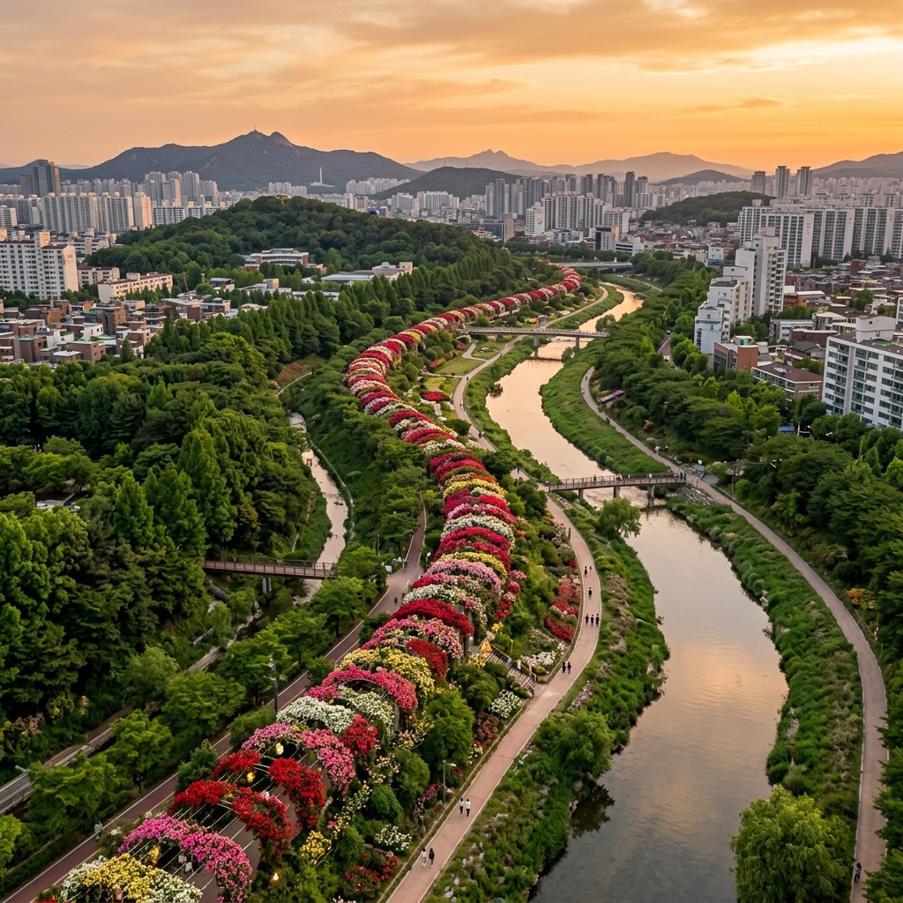
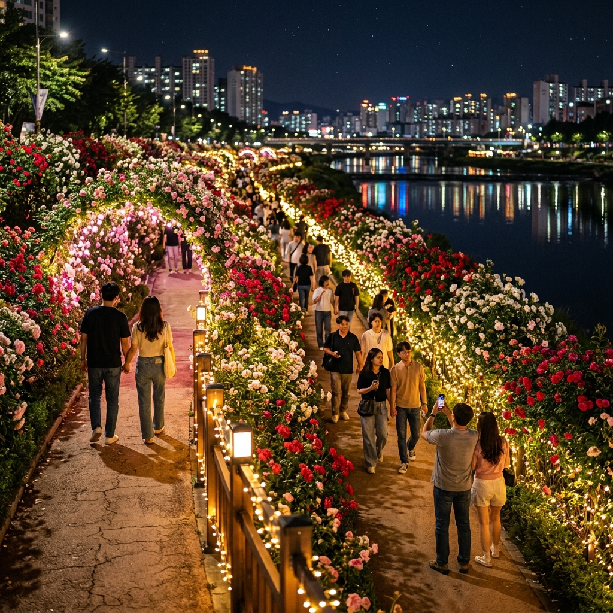
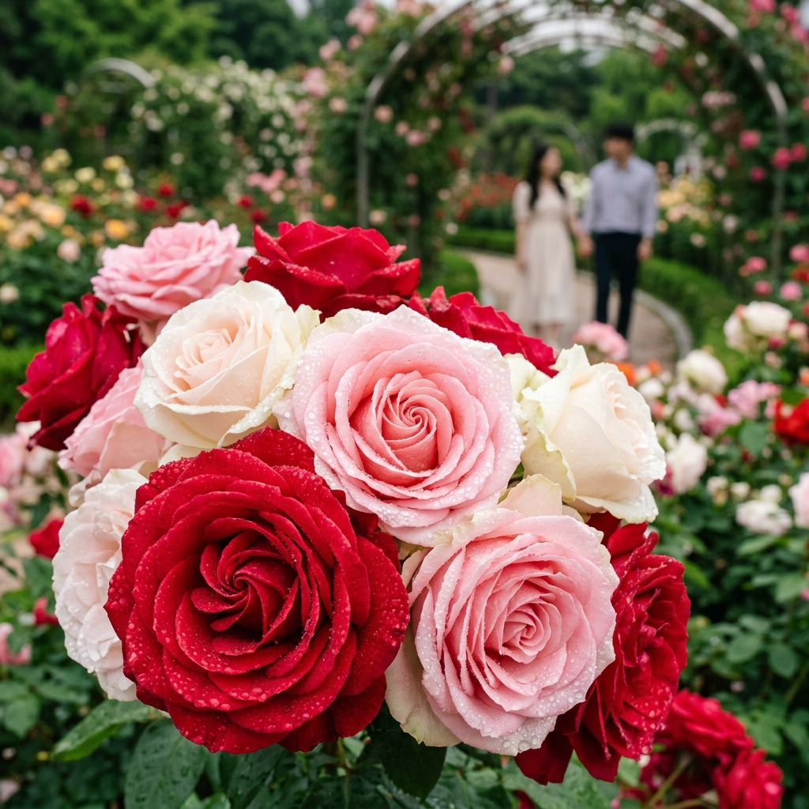

서울 중랑구 장미축제 2026 — 5.45km 국내 최장 장미터널 야간 라이트업과 사진 명당 가이드
📍 핵심 요약
2026년 제18회 중랑 서울장미축제가 5월 15일(금)부터 23일(일)까지 서울 중랑구 묵동 중랑장미공원 일원에서 펼쳐집니다. 국내에서 가장 긴 5.45km 장미터널이 붉고 하얀 장미로 가득 물들고, 일몰 후에는 형형색색의 야간 조명이 장미길을 더욱 환상적으로 변신시킵니다. 입장료는 무료이며, 7호선 먹골역 7번 출구에서 도보 3분이면 닿을 수 있습니다. 이 글에서는 사진작가들이 극찬하는 황금 시간대 촬영 포인트, 놓치면 후회할 야간 명당, 그리고 현장 체험 프로그램 전체를 낱낱이 정리합니다.
🌹 중랑 서울장미축제란? — 18년의 역사와 장미터널의 탄생 배경
중랑천 제방을 따라 조성된 장미공원은 서울 도심 속에서 이처럼 압도적인 꽃길을 만나기 어렵다는 사실을 처음 알게 되었을 때 저는 솔직히 놀랐습니다. 도심 하천변에 5km가 넘는 꽃터널이 존재한다는 사실은, 매일 버스를 타고 그 길 곁을 지나다니는 중랑구 주민들조차 처음에는 믿기 어려워하곤 했습니다.
2009년 처음 시작된 중랑 서울장미축제는 2026년 제18회를 맞이합니다. 처음에는 동네 주민 행사에서 시작했지만, 지금은 연간 300만 명 이상이 방문하는 서울 대표 봄 축제로 자리 잡았습니다. 중랑천 제방 좌우를 따라 총 5.45km 에 달하는 장미터널이 조성되어 있으며, 이 길에는 붉은 장미, 분홍 장미, 흰 장미, 노란 장미 등 수십 종이 어우러져 한국에서 가장 긴 장미 꽃길을 이룹니다.
서울시는 매년 축제 시즌에 맞춰 대규모 LED 야간 조명을 설치합니다. 2025년 야간 라이트업 경험이 입소문을 타면서 2026년은 더욱 업그레이드된 조명 연출이 예고되어 있습니다. 낮에는 장미의 향기와 색을 즐기고, 밤에는 불빛 속에 물든 장미길을 걷는 이중의 체험이 가능한 것이 이 축제만의 최대 매력입니다.
📅 2026년 축제 일정 및 주요 프로그램 총정리
| 일자 | 주요 행사 | 장소 |
|---|
| 5월 15일(금) | 개막식 및 장미 퍼레이드 | 중랑장미공원 주무대 |
| 5월 16일(토) | 중랑서울장미축제 걷기대회 / Happy Rose 콘서트 | 공원 일원 / 야외 무대 |
| 5월 17일(일) | 중랑 로즈어게인 / 장미합창대회 / Romantic Rose 콘서트 | 야외 무대 |
| 5월 18일(월) | 중랑구민대상 시상식 / 장미가요제 | 야외 무대 |
| 5월 15~23일 | 장미 포토존 운영 / 먹거리 장터 / 플리마켓 | 공원 전 구간 |
야간 조명 운영 시간은 일몰 후부터 약 오후 10시까지입니다. 일몰이 빠른 평일보다는 사람이 몰리는 주말에 야간 조명의 연출이 한층 풍부해지는 경향이 있습니다.
걷기대회는 별도 접수가 필요하지 않으며 현장 참가가 가능합니다. 장미합창대회는 전국 합창단이 참여하는 경연 형식으로 진행되어, 꽃길과 노래가 어우러지는 독특한 분위기를 연출합니다.
🗺️ 입장 방법 및 교통 정보 — 주차 전쟁 없이 가는 법
✅ 대중교통이 정답입니다
서울 지하철 7호선 먹골역 7번 출구에서 도보 약 3분이면 중랑장미공원 남쪽 입구에 도착합니다. 축제 기간 중에는 승용차를 이용한 방문이 사실상 불가능에 가깝습니다. 주변 골목과 인근 도로가 전면 정체되며, 공영 주차장은 수시간 대기가 발생합니다.
버스를 이용하실 경우에는 중랑구청 정류장이나 묵동교 정류장에서 하차하시면 됩니다. 면목동 방향에서는 면목역(7호선) 5번 출구에서 중랑천 방향으로 도보 약 10분 이내로 접근이 가능합니다. 공원은 중랑교 북쪽에서 묵동교 남쪽까지 이어지므로, 어느 방향에서든 진입이 가능하지만 주무대와 먹거리 장터는 중랑장미공원 중심부에 집중되어 있습니다.
⚠️ 관람 당일 현장 주의사항
주말 오후 2~5시는 방문객이 극도로 집중되는 시간입니다. 어린이나 노약자를 동반하신다면 오전 10시 이전 또는 일몰 후 야간 시간대 방문을 권장합니다. 또한 6월 초까지도 장미가 남아 있는 경우가 많으므로, 축제 종료일(5월 23일) 이후에도 꽃을 즐기실 수 있습니다.

중랑천을 따라 5.45km 이어지는 장미터널 항공 전경 / AI 제작 이미지
📸 사진 명당 TOP 5 — 인스타그램에서 가장 많이 등장하는 구도
중랑 서울장미축제를 찾는 방문객의 상당수가 스마트폰이나 카메라를 들고 옵니다. 매년 해당 해시태그로 수십만 장의 사진이 SNS에 올라오는데, 그중에서도 특히 인기 있는 포인트 다섯 곳을 소개합니다.
① 중랑교 아치 터널 구간 (묵동교~중랑교 사이)
중랑천 좌안 제방 위의 아치형 구조물을 장미가 덮는 구간으로, 터널 안쪽에서 밖을 향해 찍으면 꽃으로 둘러싸인 원형 프레임 사진이 완성됩니다. 역광을 이용해 오전 11시~오후 1시에 촬영하면 빛이 장미 꽃잎 사이를 투과하며 환상적인 빛망울이 생깁니다.
② 먹골역 인근 밀집 구간 — 수평선 구도의 꽃 바다
먹골역 7번 출구 방향으로 진입하면 처음 만나는 구간이 가장 밀식된 곳입니다. 양쪽 제방 모두 장미가 가득하여 수평선 방향으로 찍으면 꽃이 가득한 복도 느낌이 납니다. 키 낮은 앵글(무릎 높이)로 찍으면 배경이 모두 장미로 채워집니다.
③ 야간 조명 명당 — 일몰 30분 후 골든 타임
야간 라이트업이 시작되면 LED 조명이 장미 위에서 반짝이며 마치 은하수가 내려앉은 듯한 분위기를 연출합니다. 카메라 ISO를 800~1600으로 올리고 1/60초 셔터스피드로 촬영하면 흔들림 없이 야간 장미를 담을 수 있습니다. 삼각대 없이도 최신 스마트폰 나이트 모드로 충분히 아름다운 결과물이 나옵니다.
④ 중랑천 수면 반영 구도 — 물비치는 장미길
중랑천 수면에 비치는 장미 군락과 하늘이 함께 담기는 반영 구도입니다. 이른 아침 물결이 잔잔한 시간에 방문하면 거의 완벽한 대칭 구도를 잡을 수 있습니다. 오전 7시~8시가 가장 적합하며, 빛이 부드러워 인물 사진에도 최적입니다.
⑤ 플리마켓 공간 — 감성 스냅 배경
축제 기간 플리마켓 구역은 장미 화분과 꽃 관련 소품이 진열되어 마켓 자체가 훌륭한 배경이 됩니다. 상인분들과 소통하며 꽃을 들고 찍는 인증 사진이 특히 인기입니다.
🌙 야간 라이트업 완전 분석 — 언제, 어디서, 어떻게 볼까
중랑 서울장미축제의 야간 조명은 단순히 전구를 켜는 수준을 넘어, 장미 덩굴 위에 수천 개의 LED 조명을 심어 마치 별빛이 장미꽃 사이에서 떠오르는 듯한 장면을 연출합니다. 2026년에는 기존보다 약 30% 늘어난 조명을 설치한다는 계획이 발표된 바 있습니다.
야간 조명은 일몰 직후(약 오후 7시 30분~8시 사이)부터 오후 10시까지 운영됩니다. 5월 중순 서울의 일몰 시각은 오후 7시 38분 내외로, 어스름한 황혼과 조명이 겹치는 오후 7시 40분~8시 사이가 촬영 황금 시간대입니다. 이때 하늘은 아직 완전히 어둡지 않아 장미의 윤곽이 살아 있고, 조명의 불빛이 사진에 충분히 담깁니다.
야간 방문 시에는 제방 길이 어두워지는 구간도 있으므로 스마트폰 플래시보다는 별도 조명을 챙기시는 것이 좋습니다. 또한 주말 야간에는 방문객이 쏟아지므로 평일 야간(화~목요일)을 선택하면 훨씬 여유로운 분위기 속에서 장미와 야경을 즐길 수 있습니다.

야간 LED 라이트업 속 장미길 — 중랑천 수면에 빛이 반사되는 야경 / AI 제작 이미지
🎪 축제 체험 프로그램 심층 안내 — 단순 꽃구경을 넘어서
중랑 서울장미축제는 단순히 장미를 감상하는 행사에 그치지 않습니다. 문화, 음악, 음식, 상품이 결합된 복합 축제로 진화해 왔습니다. 특히 콘서트와 걷기대회는 매년 반복 참여자를 만들어낼 만큼 수준 높은 프로그램으로 자리를 잡았습니다.
장미 퍼레이드는 개막일인 5월 15일에 열립니다. 장미 의상을 입은 공연단이 중랑장미공원 구간을 행진하며 축제 분위기를 점화합니다. 행진 경로는 공원 주무대 앞에서 출발해 장미터널 구간 약 1km를 왕복하며, 사전 접수 없이 누구나 함께 걸을 수 있습니다.
장미합창대회는 전국에서 모인 합창단이 장미 공원을 배경으로 공연하는 이색 경연 행사입니다. 클래식부터 K-팝 합창까지 다양한 장르가 펼쳐지며, 무대 앞에 마련된 잔디 좌석에서 편안하게 관람할 수 있습니다. 장미 향기와 노랫소리의 조화는 이 축제에서만 경험할 수 있는 독특한 감동입니다.
먹거리 장터는 중랑장미공원 광장 일대에서 운영됩니다. 장미 꽃잎을 활용한 장미 아이스크림, 장미 꽃차, 장미 마카롱 등 계절 한정 메뉴가 인기를 끌고 있으며, 일반 분식과 지역 맛집 참여 업체도 다수 입점합니다. 주말 점심 시간에는 대기가 발생하므로 오전 또는 늦은 오후에 이용하시는 편이 좋습니다.
🧭 장미터널 코스 추천 — 체력별 맞춤 루트
5.45km를 처음부터 끝까지 걷는 것은 시간과 체력 면에서 부담이 될 수 있습니다. 방문 목적과 체력에 따라 세 가지 코스를 추천합니다.
| 코스명 | 구간 | 소요 시간 | 추천 대상 |
|---|
| 클래식 코스 | 먹골역~중랑교 왕복 | 약 1시간 | 처음 방문자, 어린이 동반 가족 |
| 사진 코스 | 먹골역~묵동교~야간 명당 | 약 1.5시간 | 사진 마니아, 커플 |
| 풀 코스 | 공원 전 구간 (5.45km) | 약 2.5~3시간 | 걷기 마니아, 단체 참가자 |
클래식 코스는 먹골역 7번 출구에서 출발해 장미터널의 핵심 구간을 왕복합니다. 어린이를 동반한 가족이라면 유모차도 충분히 통행 가능한 포장 제방 길을 이용하시면 됩니다. 중랑교 방향으로 진행할수록 장미 밀도가 다소 낮아지지만 한적한 분위기에서 산책을 즐길 수 있습니다.
🌦️ 2026년 5월 중순 날씨 및 방문 타이밍
서울의 5월 중순은 장미 개화의 절정기와 맞물립니다. 기상청 과거 기록에 따르면 중랑 장미는 통상 5월 10일~20일 사이에 개화 절정을 맞습니다. 2026년 5월 15일 개막일을 기준으로, 최대한 이른 시일에 방문하시는 것이 장미 상태가 가장 좋을 확률이 높습니다.
5월 중순 서울 평균 최고 기온은 22~24도 내외로 야외 활동에 최적입니다. 다만 오후 3~5시에는 햇볕이 강해지므로 모자와 자외선 차단제를 준비하시고, 야간 방문 시에는 기온이 16~18도까지 내려가므로 얇은 카디건 정도는 챙기시는 것이 좋습니다.
비 예보가 있는 날에도 방문 의미가 있습니다. 빗속에 젖은 장미 꽃잎은 색이 더욱 선명하게 살아나며, 방문객이 줄어 여유롭게 감상이 가능합니다. 우산을 들고 장미터널을 걷는 것도 색다른 낭만이 될 수 있습니다.

이른 아침 이슬 맺힌 장미 근접 촬영 — 중랑장미공원의 붉고 분홍빛 꽃잎 / AI 제작 이미지
🍽️ 인근 맛집 및 카페 — 장미 향기를 마신 후 한 끼
중랑 장미공원 인근에는 장미축제 기간에 특수를 누리는 음식점들이 많이 있습니다. 면목동과 묵동 골목 사이에 위치한 음식점들은 현지인이 즐겨 찾는 숨은 맛집들로, 대기 없이 합리적인 가격에 식사를 해결할 수 있습니다.
칼국수·냉면 거리: 먹골역 주변 면목동 일대는 오래된 칼국수 전문점들이 밀집해 있습니다. 자극 없이 깊은 육수 맛이 특징이며, 장시간 걷기 후 속을 편안하게 채우기 좋습니다. 점심 시간대(오전 11시 30분~오후 1시)에는 줄이 생기므로 오전 11시 이전이나 오후 1시 30분 이후에 방문하시기를 권장합니다.
중랑구청 인근 카페 거리: 중랑구청역(7호선) 방향으로 조금 이동하면 감성 카페들이 여럿 있습니다. 시즌 한정으로 장미 음료를 선보이는 카페들도 있어, 장미 빛깔 음료와 함께 인증 사진을 남기는 것이 최근 유행입니다.
🚗 인근 연계 코스 — 하루 코스로 완성하기
중랑 서울장미축제만으로 반나절이 채워진다면, 인근 지역을 연계해 하루 코스로 확장할 수 있습니다. 중랑천 상류 방향으로 이동하면 서울숲(성수역)이 있고, 하류 방향으로는 청계천 상류 구간까지 이어지는 산책로가 계속됩니다.
축제 구경 후 7호선을 이용해 뚝섬역 방향으로 이동하면 서울숲 장미원과 한강공원을 연계해 즐길 수 있습니다. 서울숲은 규모는 작지만 정원 스타일의 장미 배치가 다르므로 비교 감상이 가능합니다.
어린이를 동반한 가족이라면 중랑구 내에 있는 용마폭포공원도 추가해 보세요. 국내 최대 인공 폭포로 알려진 이곳은 여름철 개방 전 5월에도 외부 공원 산책이 가능합니다.
💡 현장 꿀팁 모음 — 중랑 장미 고수들의 조언
매년 이 축제를 찾는 사진 마니아들과 지역 주민들이 공유하는 현장 꿀팁을 정리했습니다.
| 상황 | 꿀팁 |
|---|
| 주차 문제 | 인근 이마트(묵동점) 등 대형 마트 주차 후 도보 이동, 단 쇼핑 없이는 단속 주의 |
| 사진 시간대 | 오전 8~10시(이른 아침 빛), 오후 7시 40분~8시(야간 조명 직전 황혼) |
| 비 오는 날 | 방문객 절반 이하, 꽃잎 색이 더 선명, 야간 조명도 정상 운영 |
| 앱 활용 | '서울 꽃 지도' 앱에서 실시간 개화 상황 확인 가능 |
| 음식 준비 | 장터 음식은 가격이 비싸므로 인근 편의점이나 마트에서 미리 준비 |
| 방문 순서 | 오전 산책 → 점심 → 오후 휴식 → 일몰 전 재입장 → 야간 조명 관람 |
📋 중랑 서울장미축제 2026 기본 정보 요약
| 항목 | 내용 |
|---|
| 행사명 | 제18회 중랑 서울장미축제 |
| 기간 | 2026년 5월 15일(금) ~ 5월 23일(일) |
| 장소 | 서울시 중랑구 묵동 375 중랑장미공원 일원 |
| 장미 길이 | 5.45km (국내 최장 장미터널) |
| 입장료 | 무료 |
| 교통 | 서울 지하철 7호선 먹골역 7번 출구 도보 3분 |
| 야간 조명 | 일몰 후 ~ 오후 10시까지 |
| 주차 | 축제 기간 중 대중교통 이용 강력 권장 |
| 문의 | 중랑구청 문화관광과 (02-2094-0114) |
#중랑장미축제
#서울장미축제2026
#중랑구여행
#장미터널
#서울봄축제
#중랑천장미
#먹골역나들이
#야간라이트업
#장미사진명당
#5월서울여행